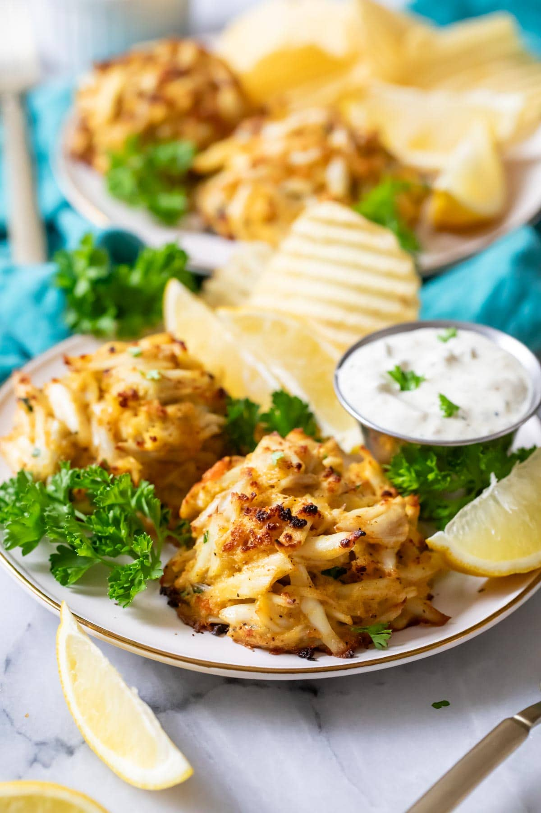

Crab Cakes

Description
Crab cakes are a classic seafood dish made from tender lump crab meat,
lightly seasoned and bound together with breadcrumbs, eggs, and a touch of
mayo for the perfect balance of flavor and texture. These golden, crispy
patties are typically pan-fried to perfection, delivering a deliciously
crunchy exterior with a moist, flavorful center. Whether served as an
appetizer or a main course, crab cakes pair beautifully with a zesty
remoulade sauce, fresh lemon wedges, and a side of crisp greens.
Ingredients
- 1 lb (453 g) jumbo lump crab meat picked over, shells removed
- ½ cup (40 g) plain panko crumbs or crushed saltine crackers
- 6 Tablespoons (85g) mayonnaise
- 1 large egg
- 1 teaspoon yellow mustard
- 1 teaspoon lemon juice
- 1 teaspoon Old Bay (or J.0. seasoning)
- 1 ½ teaspoons finely minced fresh parsley or 1 teaspoon dried
- ¼ teaspoon table salt
- ¼ teaspoon ground black pepper
-
1 Tablespoons salted butter cut into 8 pieces (plus additional for
greasing pan)
- Tartar sauce for serving, optional
Steps
- Lightly grease a rimmed baking sheet with butter. Set aside.
-
In a large mixing bowl, whisk together mayo, egg, mustard, lemon juice,
Old Bay, parsley, salt, and pepper until well combined. 6 Tablespoons
(85g) mayonnaise,1 large egg,1 teaspoon yellow mustard,1 teaspoon lemon
juice,1 teaspoon Old Bay,1 ½ teaspoons finely minced fresh parsley,¼
teaspoon table salt,¼ teaspoon ground black pepper
-
Add crab meat and panko crumbs. Use a spatula to gently work the crab
meat and panko into the wet ingredients (try not to break up the lumps
of the crab meat, you want them to stay intact as much as possible). 1
lb (453 g) jumbo lump crab meat,½ cup (40 g) plain panko crumbs
-
Scoop crab meat by heaping ⅓ cup (about 3.15oz/90g per, I use my ice
cream scoop) into a large scoop or measuring cup. I pack the meat into
the scoop to help encourage it to keep its shape, then transfer to
buttered baking sheet. If the crab cake is trying to fall apart, use
your hands to press any stray pieces back in and pack it more firmly
into the scoop next time. Do not flatten. Space at least 2” apart on
baking sheet.
-
Place a small piece of butter on the top center of each crab cake. 1
Tablespoons salted butter
-
Cover baking sheet tightly with plastic wrap and transfer to
refrigerator to chill for at least 30 minutes and up to 24 hours before
baking.
-
To bake: Preheat oven to 450F (230C). Once oven is fully preheated,
remove crab cakes from refrigerator and remove plastic wrap.
-
Transfer to center rack of oven and bake for 8-10 minutes/until baked
through. For a browned exterior, switch oven to broil for the last 2
minutes and broil on high heat for 2 minutes (I do not switch my oven
rack).
Home